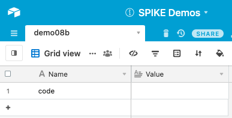
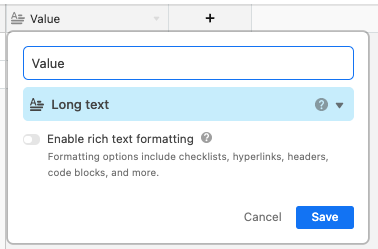
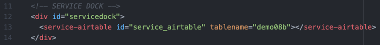
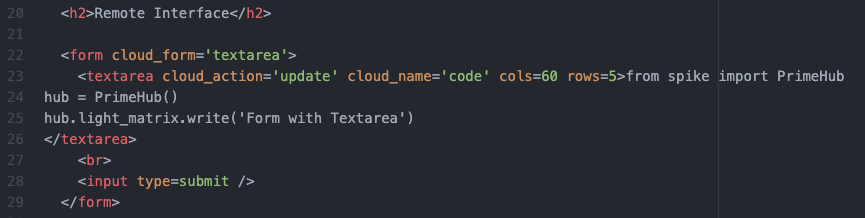
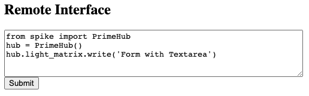
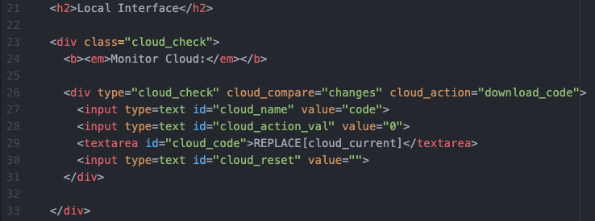
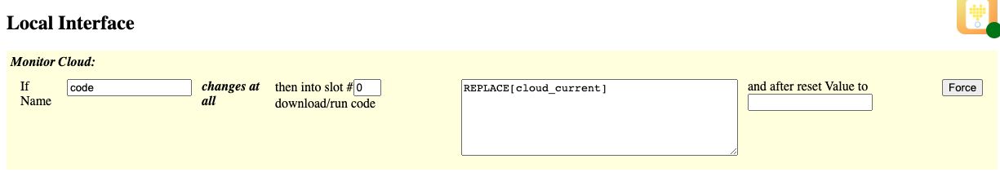

Demo 08b: Form Input with Textarea
This demo shows how to use a form input, with a textarea element (multiline text).
Documentation
Be sure to view the overall Documentation for configuring
the cloud storage (API key, Base ID, etc) and for more information on how the entire system works.
Airtable Setup
The "Name" column has an entry "code" that will hold the updated
code being sent from the Textarea.
NOTE: the value column is of field type "Long text"

In Airtable, to change the type of a column, use the "Customize field type"
option to select "Long text" as the type of the Value. This allows
long multiline text that includes "new line characters."

Remote Page Setup
Service Dock
The remote page has the Airtable Service Dock element. Make sure to
update the tablename attribute to match your table name.

Remote Interface
The textarea can hold multiline plain text. Then the submit button triggers
the contents of the textarea to be sent to the cloud.

This is how the interface will look on the Remote Page:

Local Page Setup
Service Dock
The local page has both the Airtable Service Dock element (make sure
to update the tablename attribute to match your table name).
There is also a single SPIKE Prime Service Dock element.

Local Interface
The local page is the same as Demo 05: Textarea.

This is how the element will look on the Local Page:

Demo 08b Quick Links:
Return back to the main homepage.